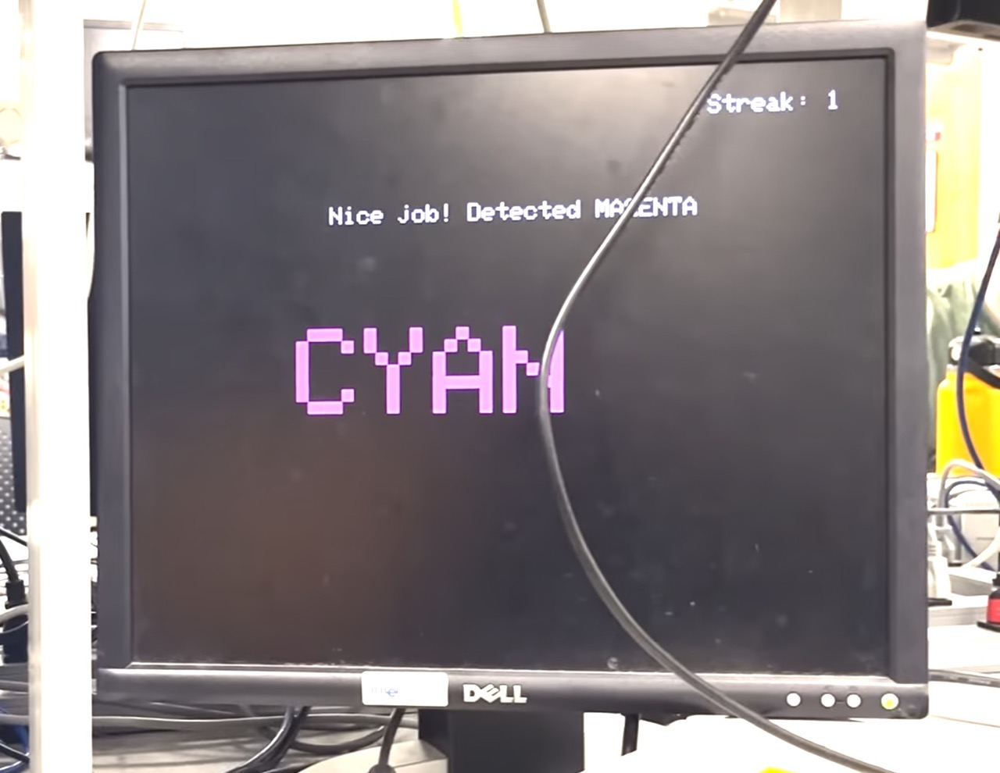

Voice Controlled Machine Learning on RP2040
By Taylor Stephens (tms279), Zack Hatzis (zdh5), and Adam Fofana (adf64)

Projection Introduction
The project we decided to design and build was a machine learning voice controlling system that is implemented with a “Stroop Effect” reaction game where the player has to quickly say the font color of the printed text on the computer screen instead of the actual text which is a printed text of a different color.
For the final project, utilizing all the embedded systems skills and knowledge we had picked up from the three labs, particularly the Cricket Synthesis and Synchronization lab, we wanted to delve into a more complex audio-based project. So we decided to build a Keyword spotting system much like Alexa or Siri. Seeing that Keyword spotting technology is already being extensively used in the world to make online searches and inquries with our smartphones and smart assistant devices easier and more efficient, we were curious in seeing if we could run and deploy a ML model on a low-power microcontoller like the RP2040 in order to build a similar technology.
In order to build such a system, we first acquired over 800 audio samples, extracted the MFCC features from the audio samples, designed and trained a neural network (NN) model using the open-source Edge Impulse platform, designed the breadboard circuitry using a electret microphone along with some LEDs, and used the deployed model on the RP2040 to make a fun and challenging reaction game.
High level design
Our curiosity and research about deploying a complex ML model that is accurate in classifying and detecting on low-power microcontrollers led us to the little-known field of tinyML. During the building of this project we referenced Gian Marco Lodice’s TinyML Cookbook to get ideas about the sort of project we wanted to work on and how to go about doing it.
Acquiring audio data
To collect the audio samples that the ML model would train and test on, we used our smartphones and connected to a free Edge Impulse account that we created and simply began recording the sound signals for 7 different color classes. For the colors red, blue, green, yellow, magenta, cyan and white, we collected roughly over 130 audio samples for each and 100 audio samples for the unknown class.
The raw audio waveform is a filtered signal of the smartphone sends over to the Edge Impulse platform. The signal represents a quantity that varies over time. Sound signal for example is a variation in air pressure. It represents variations in air pressure over time.
The microphone being a measurement device, measures these variations and generates an electrical signal that represents sound. The microphone much like a speaker is also known as a transducer because it converts our speech signals from one form to another.
Once the audio signals have been converted and sent over to the Edge Impulse platform, we examined the MFCC features used to distinguish the colors from each other so that the model can accurately classify them. Also on the Edge Impulse,the signals are passed through two main computational blocks: the processing block, which prepares the samples for the ML algorithm and learning block, which is where the model learn the features of the data samples.
In the processing block, a Discrete Fourier Transform (DFT) is done on the audo signals to obtain the spectrograms of the audios. Which can be thought of as an audio signal’s image representation. However for audio speech signals in particular, we not only need to obtain the spectograms but we also need to adjust them so that the frequencies are on levels of what humans can perceive and the loudness is also adjusted to scale logarithmically rather than linearly as follows:
a. Scaling the frequency to Mel with the Mel scale filter bank: The Mel scale remaps the frequencies so that they are distinguishable. For instance if we were to play pure tones from 100 Hz to 200 Hz with a 1 Hz step, with such a filter we can hear each frequency step. But if such a filter was used at higher frequencies of 7500 Hz and 7600 Hz, we would barely be able to hear it because such frequencies are simply too high to be of use to the human ears.
The Mel scale is commonly computed using triangular filters overlapped in frequency domain.
b. Scaling the amplitudes using the decibel (dB) scale: The human brain does not register sound amplitude linearly but logarithmically. Therefore we need to scale the amplitudes of audio signals logarithmically.
#### Extracting MFCC From the output of the Mel filter, we can still cut down on the number of componenet features while still keeping the distinctive features that the model can use to acurrately do classification. MFCC aims to extract fewer and highly unrelated coefficients from the Mel spectrogram. The Mel filter bank uses overlapped filters which makes the components highly correlated. We can decorrelate them by applying Discrete Cosine Transform (DCT). The resulting spectogram has fewer frequencies than the mel spectogram.
From the feature explorer, we can infer if the input features are distinct and suitable for our problem by being able to see the classes (except the unknown category) well seperated and classfied on the 3D scatter plot above.
Now that we have successfully extracted the minimal number of features that the model can use to train and test on, we can proceed to designing and training the neural network (NN) model.
The NN model has two two-dimensional (2D) convolution layers, one dropout layer and a fully connected layer. The network’s input is the MFCC feature extracted from the 1-second audio samples that we split the audio data into.
Program and Hardware Design
Program Design
Our code largely consists of multiple functions to record from the microphone, classify the audio input based on our ML model, and code to update the VGA display based on what color the user said. We tried to make our program multi-threaded (by offloading the VGA updating to another core) but this introduced problems with the recording of the audio data and the classification of the audio against our ML model so we ultimately decided against it.
When starting up the Raspberry Pi Pico, nothing visually happens. The int main() function runs which correctly initializes all of the GPIO pins we use, setup the ADC, and initialize the array used to store the raw ADC data. Then, the main thread is scheduled and a basic while loop executes. Before reaching the infinite while loop, the program resets the streak variable to zero which keeps track of how many colors the user got correct in a row. While the physical button on the board is not pressed, nothing happens and the program keeps cycling through the loop.
When the external button on the board is pressed, the program enters the loop and the VGA display is initialized and the color and word variables are randomized based on how long it has been since the program started executing. This ensures a new random color every time the button is pressed (unless of course the user gets the exact timing the same on each run down to the millisecond).
After this, the color is displayed on the display and the program sleeps for 700 ms to give the user a small window to process the information on the screen. Next, the static bool microphone_inference_record(void) function is run. This function essentially sets up a repeating timer to go off for a desired sampling period.
Inside the timer ISR, the sample buffer is filled with audio samples from the ADC. One thing that was tricky here was taking out the bias from microphone amplification. To do this, we had to determine the bias of the amplifier which is VCC/2 and subtract it from each ADC value as shown below.
Once the buffer is full, the repeating timer is cancelled and the program returns to the main thread loop. The microphone buffer is then sent through our machine learning model. All of the machine learning classification is done with a library from Edge Impulse which was created based off the model we created on their online platform. The cool thing about Edge Impulse is that the model we created online using voice samples can be outputted as a C++ library which means that all of the machine learning processing can be done on a local machine instead of the cloud. There will be more on this later in the results section. For information about this, see this link. The run_classifier function from Edge Impulse takes in a signal_t type with raw sensor data and returns the result in a custom ei_impulse_result_t type which contains data such as the classification, the time it took to compute the classification, and any anomalies that occured when doing the classification.
After getting the results, the different color categories are compared against a set classification percentage (in our case, %60) and it is compared against the color displayed on the VGA screen. The VGA screen is then updated. If the user gets the color correct, the streak variable is incremented and a correct message is displayed on the VGA screen. There are also results for if the classification fails and if the user gets it wrong. Below is a snippet of code that demonstrates this. Note: The correct_display() function handles the updating of the VGA display. This function and the rest of the code will be available in the Appendix.
After displaying the results to the user, the loop starts again and waits for the user to press the button to try the game again. If the user gets the answer correct, the streak variable persists through each game play. If the user gets it wrong or the classification fails, the streak variable is reset to zero before the loop starts again.
Hardware Design
For the most part, our circuit design was pretty simple. The circuitry consited of wiring for the VGA display, the microphone, three LEDs we used for testing the ML model, and headphone jack circuit with voltage divider.
The VGA display, microphone output, and button were connected to different GPIO pins on the Raspberry Pi Pico. The GPIO connections and outputs are as follows:
- GPIO 16 —> VGA Hsync
- GPIO 17 —> VGA Vsync
- GPIO 18 —> 330 ohm resistor —> VGA Red
- GPIO 19 —> 330 ohm resistor —> VGA Green
- GPIO 20 —> 330 ohm resistor —> VGA Blue
- RP2040 GND —> VGA GND, Microphone Ground, Jack Ground, and Button Ground
- RP2040 3.3V —> Microphone VCC
- GPIO 26 (ADC) —> Microphone Out
- GPIO 10 —> Button
- GPIO 9 —> 330 ohm resistor —> Red LED
- GPIO 8 —> 330 ohm resistor —> Green LED
- GPIO 7 —> 330 ohm resistor —> Yellow LED
Besides the voltage divider circuit, the wiring for this project was pretty simple. The voltage divider circuit served to take the output from the headphone jack and send a signal to the Pico that it can use. Professor Adams explained that the headphone jack from a computer outputs non-standard voltage that the Pie cannot use so the divider circuit is meant to scale the voltage so the Pie can read the output. A schematic of the voltage divider circuit is shown below.
Hardware Schematic
Problems
We originally planned to use the ML model to control the game and a digital LED strip. The LED strip planned to be used was a strip of WS2812B LEDs. The cool thing about these LEDs is that you can individually control each LED. This means that the LEDs take a 24 bit signal to control color rather than sending a specific voltage to the LEDs. Although it it cool to be able to control each LED, it makes sending a signal from the RP2040 very complicated. The LEDs require very specific timing of 0 and 1 bits to set each pixel. The timing requirements are outlined below.
As you can see, the timing of the LEDs requires a micro-second period with precise timing specifications. Taylor had previous experience using these LEDs from a past personal project. The method we were thinking of using was to use DMA to change the GPIO registers to send out the specific timings required. This required using three DMA channels, one for the high part of the signal, one for the low part of the signal, and one for the information we actually wanted to convey. Unfortunately, after experimenting with this on the RP2040, we were able to get the LEDs to turn on (meaning a signal with the correct specifications was sent) but they were very finicky. The color programmed wasn’t the correct color and the LEDs would constantly blink meaning that something was slightly off. Without a waveform analyzer present in the lab it would hard to diagnose the specific timing issues. Because of this, we decided to abandon this idea and just continue with the game. A detailed write-up on the planned method and more information can be found on Taylor’s website.
Results
We had very little test data to support our project. Our tests involved saying a color and seeing if the model would detect it and displaying the classification percentages to the serial monitor. There was no hard collection of data to support the accuracy of our results. That being said, from our testing, the project had a decent accuracy.
When detecting a color with perfect audio data, the model would classify it with a higher than 90% percentage which shows that the model was functioning. For example, here was a run where we fed it the audio data for red:
Predictions (DSP: 283 ms., Classification: 82 ms., Anomaly: 10 ms.)
98.30, 0.00, 1.70, 0.00, 0.00, 0.00, 0.00, 0.00
From this data, you can see that the model detected red with 98.3% confidence and green with 1.70% confidence.
That being said, when feeding the model with imperfect audio data (say from the microphone) the results would often times not be like the result above.
Predictions (DSP: 283 ms., Classification: 233 ms., Anomaly: 10 ms.)
0.00, 0.00, 0.00, 0.00, 0.00, 0.00, 0.00, 100.00
A result like this shows that the model was unable to classify the data. The last category displayed here is the unknown category which means that model was unable to classify our audio against the model correctly. This would happen on every other press of the button, with some words triggering this effect more than others.
For safety, there weren’t many things to consider here. The project itself is relatively safe in nature as the user just needs to press a button and speak into the microphone. That being said, we did not encase our project in anything other than a bare breadboard. If the user were to touch a wire they could receive an electric shock from the electricity running in the wires. Any amount of current above 1 mA can be harmful to a person. While this is true, the resistance created by skin with voltages of 3.3V will not be harmful to a person.
Usability is a hit or miss with this project. Because the machine learning model was trained with our voices, it works best when hearing voices similar to ours. A higher pitched voice may throw off the model or cause it to not work as well. Professor Adams did try our project and was able to get it to classify, however, even though the model was not trained with his voice meaning there is some tolerance in who can use the project.
Conclusion
Our final project works well but not perfectly due to a few factors.
For one, the machine learning model we used was only trained with our voices and isn’t trained to the level of commercial-grade machine learning models. Because of this, we had some inaccuracies with classifying the colors people were saying. For certain colors, we would get almost perfect detection each time due to the nature of the color. For example, magenta worked almost 100% of the time because the word magenta is very distinct from other colors that people could say. A color like red, for example, is very similar in waveform to other one-syllable words which makes it much harder to detect. A better trained model would help solve this inaccuracy. As seen in our demo video, we had a hard time classifying some of the colors with complete accuracy. With more time, we could have trained the model with a wider range of audio samples to increase its accuracy.
Secondly, the audio data we received from the microphone was often clipped due to being too loud which caused problems. Speaking too close to the microphone would cause clipping and the project would fail to classify the results. When sending audio data recorded on our phones through the microphone jack we received almost perfect results. This suggests that with a better microphone with a pop filter our project would work much better. With more time, we would likely try and get a better microphone to feed data into the project.
As far as getting the LED strip to work, we failed at implementing this. Due to time constraints, we did not have enough time to generate perfect signals to the LED strip to add that to our implementation. With more time this would not be hard to implement. Despite this, the hard work of the project was to get the ML model to classify so we feel that an absence of the LED strip does not affect the overall success of our project.
For meeting the standards of this project, our project displayed an appropriate level of hardware and software complexity. Making and training the model as well as integrating it with the Pi was complex in nature. There was a lot of struggle even getting the code to compile with the library provided by Edge Impulse. Feeding the audio signal to the model was also challenging and served to be a good test of what we learned in class. The hardware complexity came from wiring up the headphone jack and the microphone which we learned about in class. Professor Adams assisted us with creating the voltage divider circuit for the jack.
Our project specification was rather open ended in nature. Our main goal here was to run audio classification through a ML model which we achieved. We say that we achieved this goal well enough given the time constraint and resources provided to us. The rest of the project we built upon the idea of getting classification to work which allowed us to get creative with what we wanted to do.
Intellectual Property Considerations
A lot of the inspiration for this project and some of the code we used for this project came from the book TinyML Cookbook: Combine artificial intelligence and ultra-low-power embedded devices to make the world smarter by Gian Marco Iodice. We specifically looked at Chapter 4 to learn about how ML works and how it can be implemented into a low-powered embedded device like the Raspberry Pi Pico.
We also would not be able to do this project without the use of Edge Impulse, a free development platform for machine learning. Our model was trained entirely with their platform and the code to run the classification locally packaged and created from their tool.
Appendicies
Appendix A
The group approves this report for inclusion on the course website.
The group approves the video for inclusion on the course youtube channel.
Appendix B
A complete version of our code can be found here.
Appendix C
Breakdown of Responsibility
- Adam: Write report, assist with coding and development, training model, buying microphone (not used)
- Taylor: Write report, assist with coding and development, LED strip wiring/programming (not used), training model,
- Zack: Write report, work on coding and development, developing color game, training model
Appendix D
References used:
- TinyML Cookbook: Combine artificial intelligence and ultra-low-power embedded devices to make the world smarter by Gian Marco Iodice
- Edge Impulse Documentation
- MAX4465 Datasheet